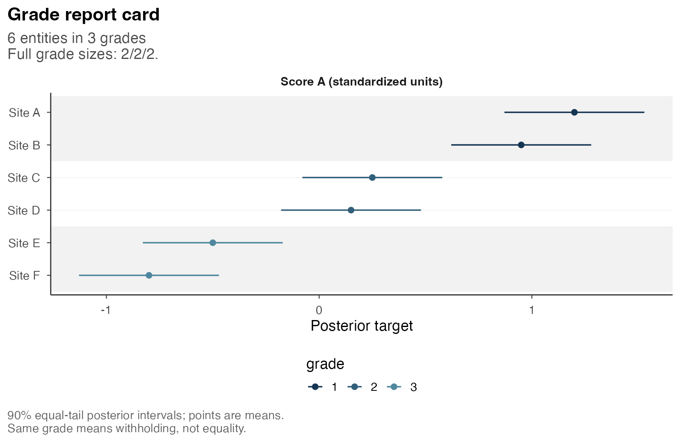
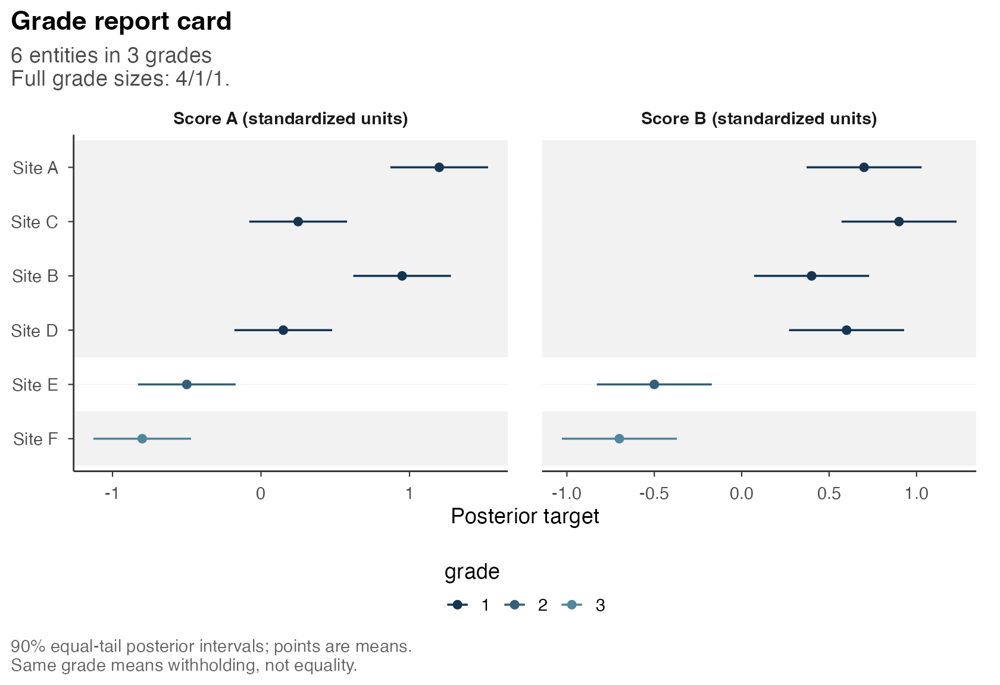

Analysis with one or several criteria
Source:vignettes/a1-getting-started.Rmd
a1-getting-started.RmdWe consider the assignment of six sites to ordered groups when their scores are uncertain. A complete ranking specifies a direction for every pair. In postrank, comparisons may instead be withheld by assigning sites to the same grade. The loss balances posterior expected wrong-direction errors against the cost of withholding. This formulation applies to one criterion or to several criteria.
The analysis first uses one score and then includes a second score for the same sites. Grade 1 has highest priority. A shared grade withholds the comparison between two sites without asserting equality of their scores.
Posterior input
The example comprises six fictional sites, A through F, with specified score means and standard deviations. Each score has a normal distribution with standard deviation 0.2 in illustrative standardized units. Sites are independent, as are the two scores within a site. Higher scores receive higher priority on both criteria. These distributions define a teaching example; they are not fitted to observations from actual sites.
sites$one contains the first score.
sites$two adds the second score while retaining the same
distribution for the first. Both inputs contain analytic comparison
probabilities and the information required for marginal posterior
intervals. In an application, the targets, directions and dependence
assumptions must first be specified, as described in Analysis of supplied posterior
results.
knitr::kable(data.frame(Site = sites$units$label, sites$law$means),
row.names = FALSE, digits = 2,
col.names = c("Site", "Score A mean", "Score B mean"))| Site | Score A mean | Score B mean |
|---|---|---|
| Site A | 1.20 | 0.7 |
| Site B | 0.95 | 0.4 |
| Site C | 0.25 | 0.9 |
| Site D | 0.15 | 0.6 |
| Site E | -0.50 | -0.5 |
| Site F | -0.80 | -0.7 |
Loss and grade constraints
The first analysis specifies two reporting choices.
G_max = 3 permits at most three grades, including solutions
with fewer grades. tau = 0.2 is the loss incurred by
withholding a pair, whereas an incorrect disclosed direction has loss
one before averaging over pairs. Decreasing tau therefore
reduces the relative cost of withholding. The supported range is
0 < tau <= 0.5.
The following call computes the analysis using HiGHS and requires the
optional highs package. It is displayed without execution.
The results and figures below use prepared analyses obtained with the
same calls and inputs; consequently, rendering this article does not
require an optimizer.
one <- postrank(sites$one, tau = 0.2, G_max = 3, backend = "highs",
control = postrank_control(time_limit = 60, threads = 1, seed = 1304))For a single criterion, the criterion weight is automatically one, so the loss involves no averaging across criteria.
one
#> <postrank_analysis> 6 entities in 3 grades (sizes 2 / 2 / 2)
#> One criterion: score_A.
#> Posterior loss: 0.0417.
#> Disclosed 12 of 15 pairs (80.0%); withheld 3.
#> Expected error among disclosed pairs: score_A 0.002.
#> Solver: Optimal within solver tolerances.
#> Optimization gap: 0; requested absolute gap 1e-08.
#> Prepared: report card.
#> Grade 1 has highest priority; a shared grade withholds the comparison.
#> grade 1 (2): A, B
#> grade 2 (2): C, D
#> grade 3 (2): E, F
#> ! 1 warning recorded: Reported lower bound exceeded the validated action ris...
#> i summary(x) explains the loss, settings and bounds; get_grades(x) returns
#> all grades.The result uses 3 grades and discloses 12 of the 15 possible pairs. Sites A and B are assigned to grade 1, C and D to grade 2, and E and F to grade 3. Since A has a smaller grade number than C, the report places A above C. The comparison of A with B is withheld; their order of presentation within the grade has no inferential interpretation.
The posterior expected number of errors among disclosed pairs is 0.025. Dividing by the 12 disclosed pairs yields 0.0021 expected errors per disclosed pair. This average summarizes the selected directions; individual pairs may have different posterior error probabilities.
The loss also includes the cost of the 3 withheld pairs:
p <- get_profile(one)
(p$E + 0.2 * (15 - 12)) / 15
#> [1] 0.04165164
get_risk(one)
#> $risk
#> [1] 0.04165164
#>
#> $lower_bound
#> [1] 0.04165164
#>
#> $gap
#> [1] 0
#>
#> $status
#> [1] "optimal"The resulting loss is 0.0417. Assigning all sites to a single grade would withhold every comparison and give loss 0.2 under this loss definition. Expected errors per disclosed pair would then be undefined, since the denominator would be zero. A report can therefore disclose selected directions while withholding the remaining comparisons.
The prepared result includes a small floating-point correction to the
solver bound. The reported lower bound exceeded the independently
evaluated action loss by an amount within the numerical tolerance. The
recorded gap is zero after correction. This gap concerns optimization
conditional on the supplied probabilities; it provides neither a measure
of posterior uncertainty nor model validation. The warning and further
details are retained in summary(one).
Posterior summaries and grades
postrank_plot_report_card(one,
entity_labels = setNames(sites$units$label, sites$units$entity_id),
criterion_labels = c(score_A = "Score A (standardized units)"))
Open full-size figureSix fictional sites: score A means and 90% equal-tail marginal posterior intervals. Higher scores have higher priority; the grade strips show which comparisons are withheld.
The points and marginal 90% intervals describe scores under the
specified normal laws, whereas the grade strips represent the selected
comparisons. The intervals have neither simultaneous coverage across
sites nor an interpretation as intervals for grade labels. Interval
overlap alone cannot recover the grading decision, which also depends on
the withholding cost and grade cap. The complete grade table is
available through as.data.frame(one), and the named grade
vector through get_grades(one).
Analysis with two criteria
We next include score B. Although sites C and D have lower score A means than A and B, their score B means exceed that of B. A common grading must therefore accommodate different directions of comparison. We assign equal weights to the criteria and retain the withholding cost and grade cap.
two <- postrank(sites$two,
weights = c(score_A = 0.5, score_B = 0.5),
tau = 0.2, G_max = 3, backend = "highs",
control = postrank_control(time_limit = 60, threads = 1, seed = 1304))
as.data.frame(two)
#> entity_id grade
#> 1 A 1
#> 2 B 1
#> 3 C 1
#> 4 D 1
#> 5 E 2
#> 6 F 3
get_profile(two)[, c("criterion", "weight", "E", "E_over_N", "risk")]
#> criterion weight E E_over_N risk
#> 1 score_A 0.5 0.1596996 0.01774440 0.09064664
#> 2 score_B 0.5 0.2405960 0.02673289 0.09603973The common report assigns A through D to grade 1, E to grade 2 and F to grade 3. It discloses 9 of 15 pairs and withholds 6. The criterion-specific error profiles differ despite equal weights. The weights determine contributions to expected loss, rather than requiring equal error rates.
postrank_plot_report_card(two,
entity_labels = setNames(sites$units$label, sites$units$entity_id),
criterion_labels = c(score_A = "Score A (standardized units)",
score_B = "Score B (standardized units)"))
Open full-size figureThe same sites with two criteria: 90% marginal intervals in illustrative standardized units. Both panels use one common grading; higher score values have higher priority in each panel.
The change in grouping results from including the second criterion while holding the first score’s distribution fixed. The two scalar losses average errors over different sets of criteria and therefore cannot be interpreted as competing measures of accuracy. Comparisons of alternative gradings require evaluation under common posterior inputs, weights and withholding cost.
The posterior support for a disclosed direction may differ between criteria, even though both use the same grades. Criterion-specific expected errors are therefore relevant to assessing the common report. Applications are given for school chronic absence, with one criterion, race and gender at employers, and income and incarceration in Alabama. Reading and exporting results describes the result tables and computation states, while Figures and sensitivity analysis examines changes in weights, costs and grade caps.
The methodological articles explain the one-criterion loss and its KRW correspondence and the different goals available with several criteria.